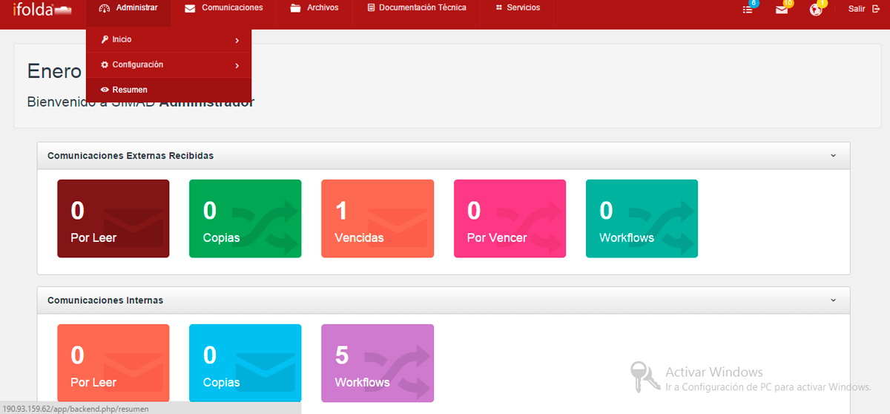
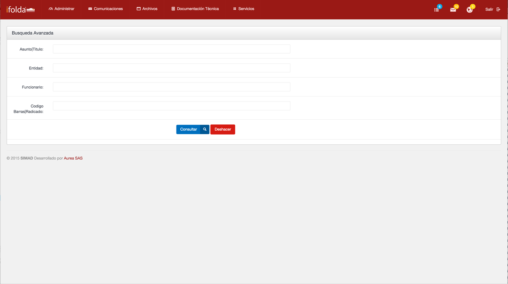

El módulo de resumen facilita el acceso del usuario a las tareas pendientes dentro del SIMAD.
Resumen Ir al Inicio

Permite visualizar el listado de tareas pendientes registradas en el sistema SIMAD.
Para visualizar el resumen en el sistema SIMAD, realice de los siguientes pasos:
- Si desea borrar los datos digitados haga clic en deshacer para escribir nuevos datos.